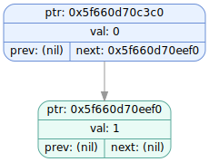
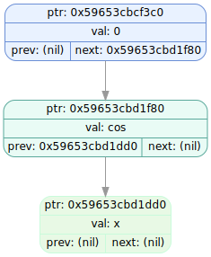

====================[ TREE DUMP #8 ]====================
Timestamp: 2025-12-04 02:41:33
Test dump tree with nodes
===================================================
tree ptr : 0x508000000f20
root ptr : 0x503000000940
size : 4
stack ptr : 0x506000000560
buff.ptr : (nil)
buff.len : 0
list idx : 1
-- Created at (tree ver_info) --
file: source/forest_operations.cpp
func: forest_add_tree
line: 105
-- Called at (passed ver_info) --
file: source/tests.cpp
func: test_dump_copied_tree
line: 552
IDX NODE PTR TYPE LEFT PTR RIGHT PTR VALUE
---- -------------- -------------- -------------- -------------- --------------------
0 0x503000000940 FUNCTION 0x503000000910 0x5030000008b0 +
1 0x503000000910 FUNCTION 0x5030000008e0 (nil) sin
2 0x5030000008e0 CONSTANT (nil) (nil) 1.000000
3 0x5030000008b0 CONSTANT (nil) (nil) 2.000000
SVG: dumps/tree_dump_008.svg

====================[ TREE DUMP #9 ]====================
Timestamp: 2025-12-04 02:41:33
Test dump tree with nodes
===================================================
tree ptr : 0x508000000f20
root ptr : 0x503000000a60
size : 0
stack ptr : 0x506000000560
buff.ptr : (nil)
buff.len : 0
list idx : 1
-- Created at (tree ver_info) --
file: source/forest_operations.cpp
func: forest_add_tree
line: 105
-- Called at (passed ver_info) --
file: source/tests.cpp
func: test_dump_copied_tree
line: 560
IDX NODE PTR TYPE LEFT PTR RIGHT PTR VALUE
---- -------------- -------------- -------------- -------------- --------------------
0 0x503000000a60 FUNCTION 0x503000000a00 0x503000000a30 +
1 0x503000000a00 FUNCTION 0x5030000009d0 (nil) sin
2 0x5030000009d0 CONSTANT (nil) (nil) 1.000000
3 0x503000000a30 CONSTANT (nil) (nil) 2.000000
SVG: dumps/tree_dump_009.svg
